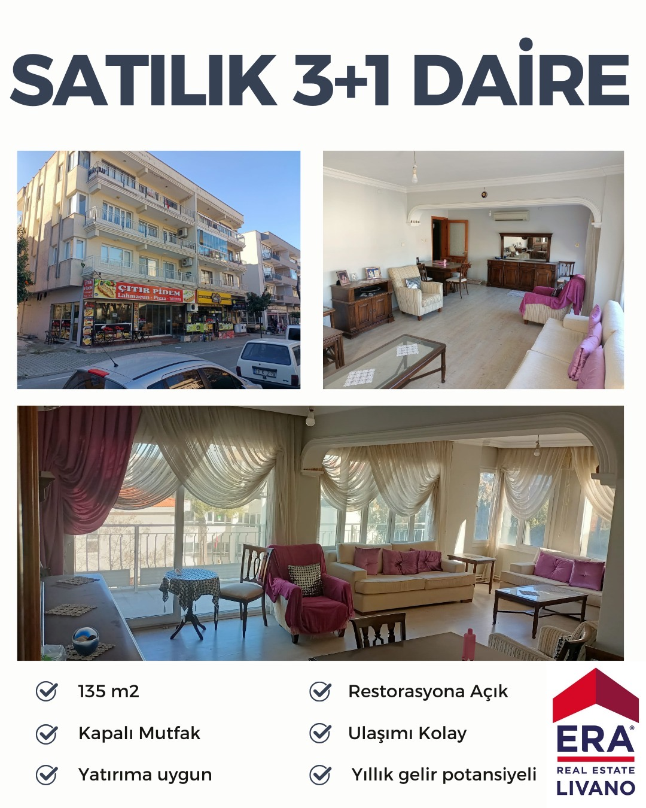
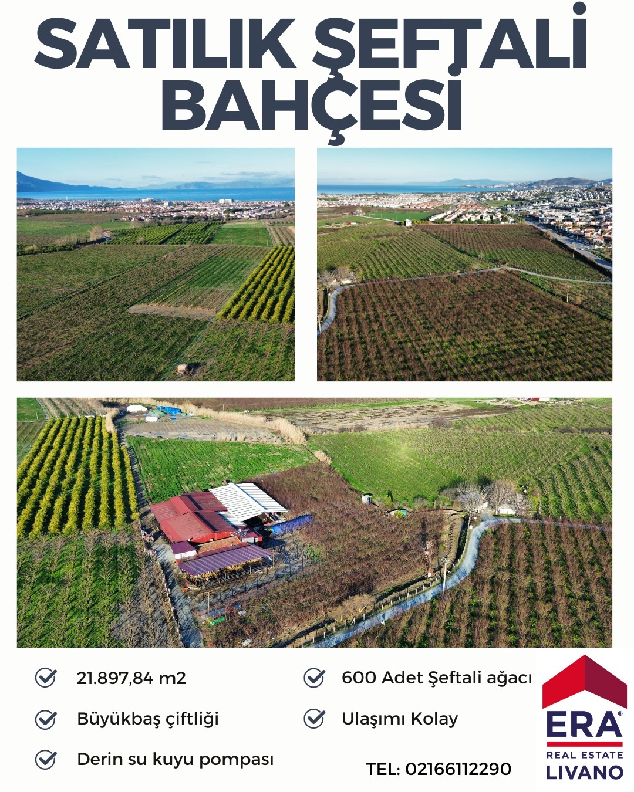
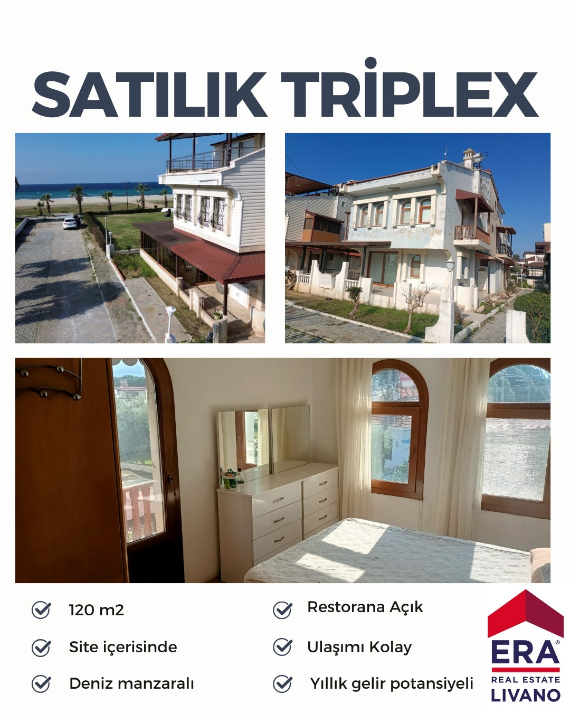
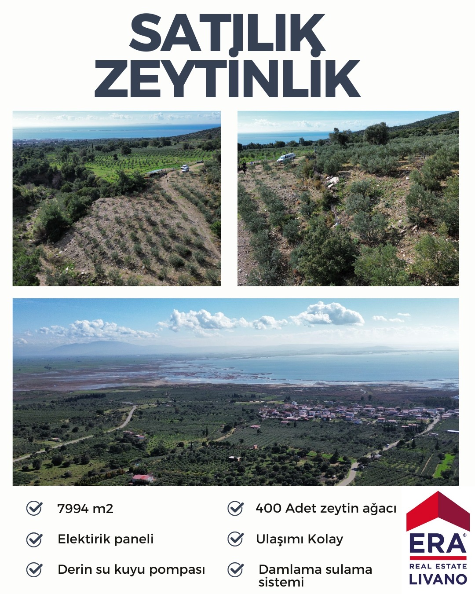

Kuşadası Davutlar tam merkezinde 4 katlı binanın 4. katında asansörsüz 150 m2 Brüt 135 m2 net kullanım alanına sahip kapalı mutfak karanlık odası olmayıp çift balkonlu dur her yere yürüme mesafesinde 4
4.200.000 TL
Kuşadası Davutlar
ana asfaltına 160 Metre kadastro yoluna cepheli
içerisinde 600 adet bakımlı şeftali ağacı bulunan kendine ait Derinkuyu pompası ve damlama sulama sistemi ile sulanan satılık bahçe
Kuşadası Merkeze 14 km, Davutlar Merkeze 4 km , denize 1.800 metre mesafede.

Kuşadası Davutlar sahil sitelerinde denize sıfır site içerisinde denize 2. sıradadır tabanda 48 m2 açık mutfak ve Ortak kullanım banyo wc ikinci katta 3 yatak odası her odanın balkonu mevcut ortak kullanım banyo wc var 3. katta ise 16 m2 net kullanım alanlı iki kişilik yatak odası ve 8 m2 banyo wc yapmaya uygun çamaşır odası mevcuttur Kuşadası merkez'e 19 km mesafededir Davutlar'a 4 km mesafededir İzmir hava alanına 74 km mesafededir.
20.000.000 TL
AYDIN, Söke ilçesi Doğanbey mahallesinde kadastro yoluna cepheli içerisinde 400 adet bakımlı 7 yaşında Zeytin ağacı mevcut kendine ait Derinkuyu pompası güneş paneli ile sulama yapılıyor. Eski Doğanbey köyüne (eski rum köyü) tam 650 metre mesafede. Denize 1300 metre mesafededir
8.000.000 TL